Personal car shoots
Clean, dramatic portraits of your pride and joy—stock, modified, classic, or somewhere in between.
From old-school American muscle to modern street builds. Real cars, real stories, unforgettable shots—right here in the Black Hills.
Every car has a personality. Here's where the details, the stance, and the story come together.
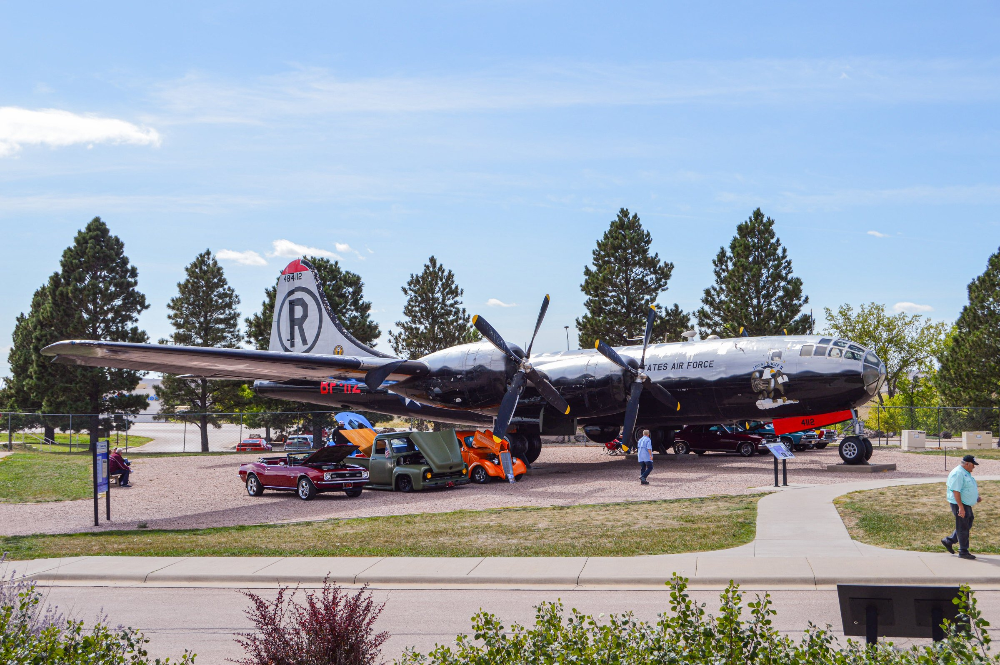
Connecting With the Community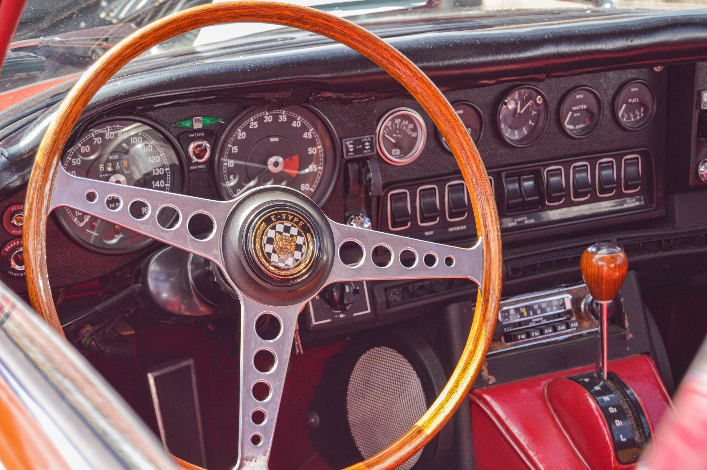
Timeless Pieces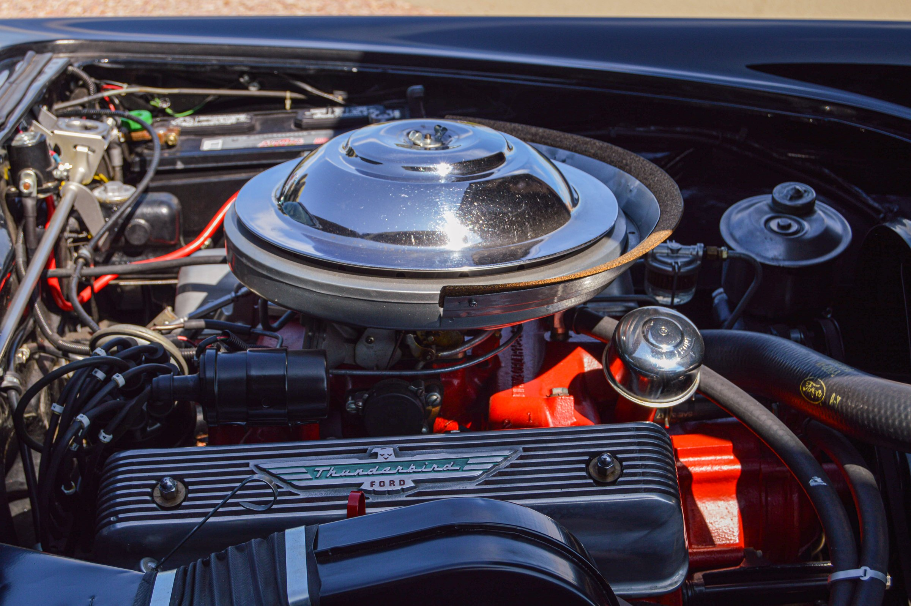
Capturing Every Detail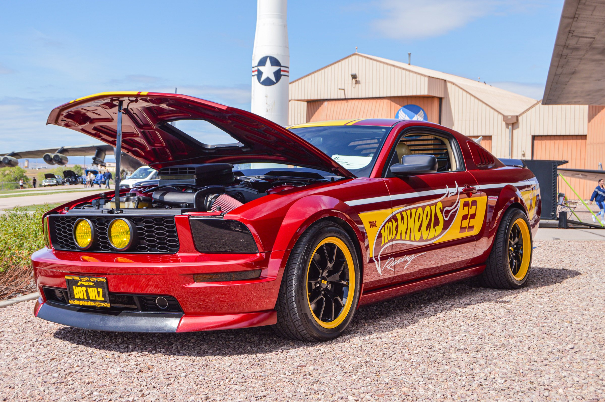
Local Icons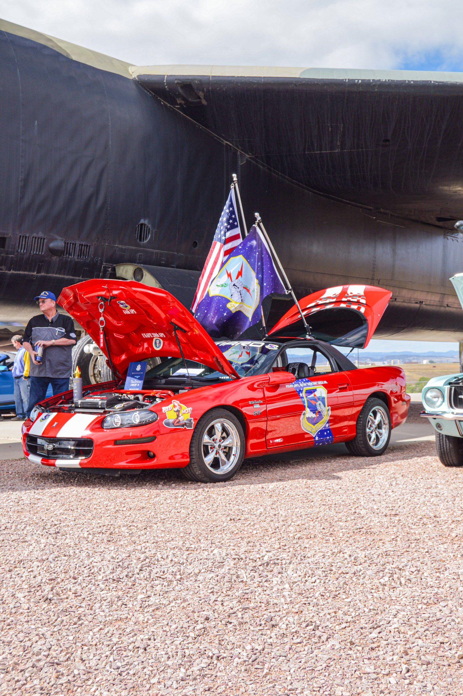
Supporting our Veterans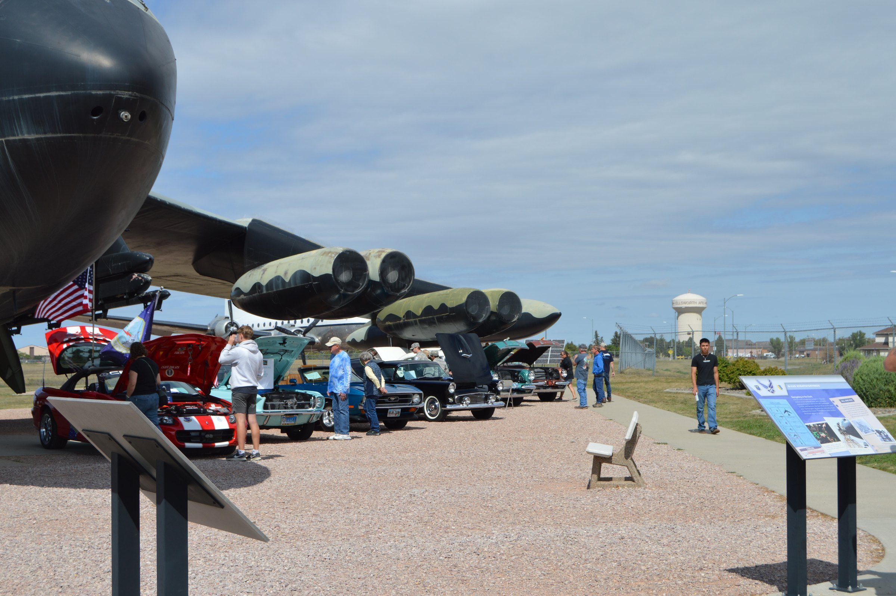
Car Shows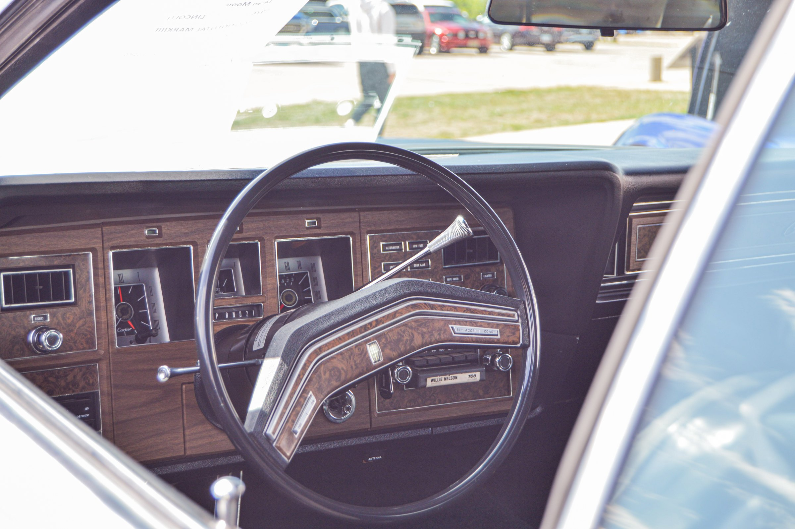
Respecting the Classics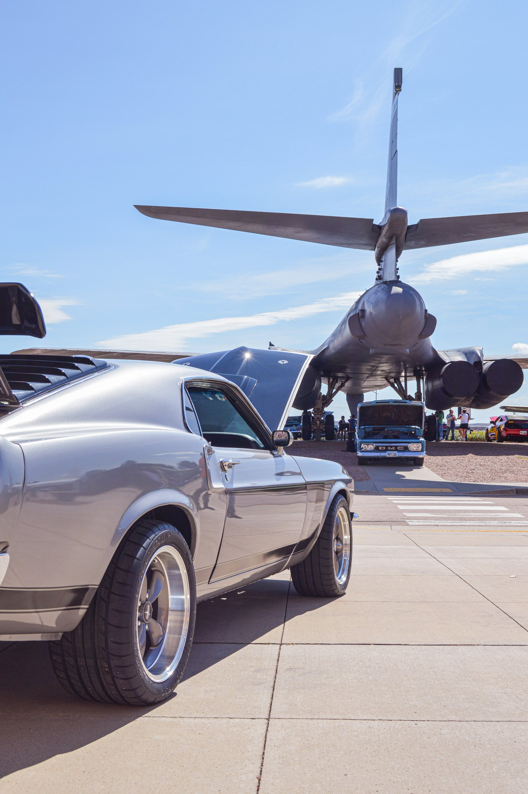
Unique Angles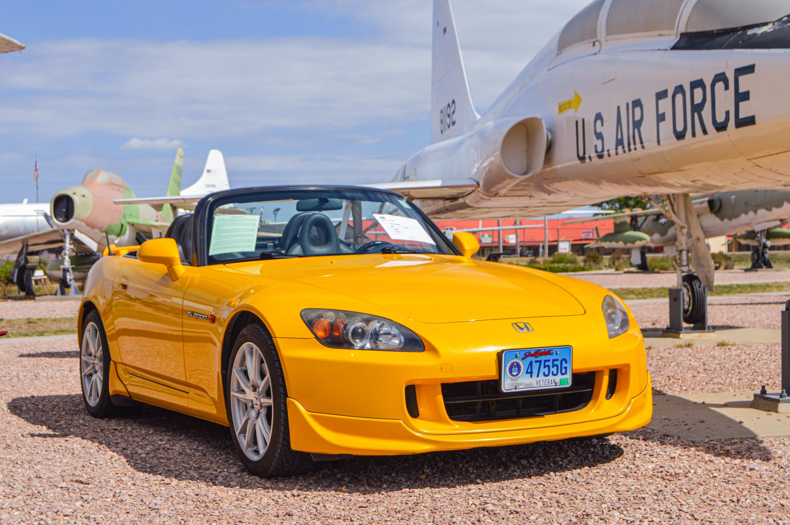
JDM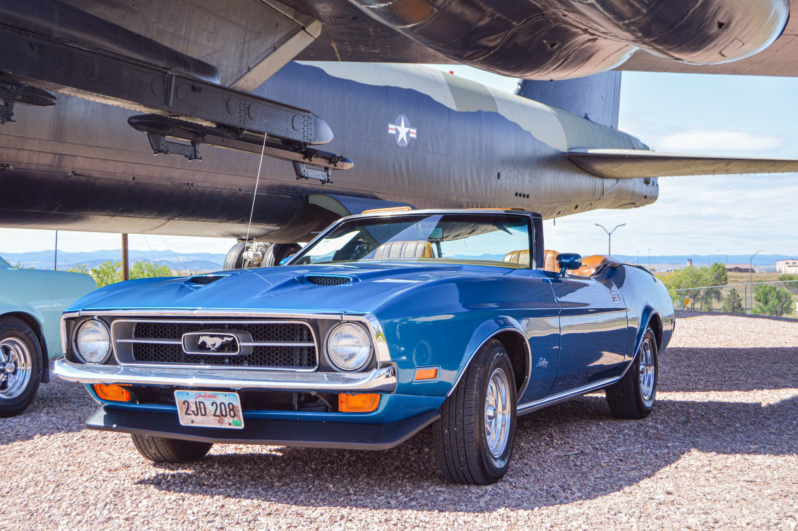
Classic Muscle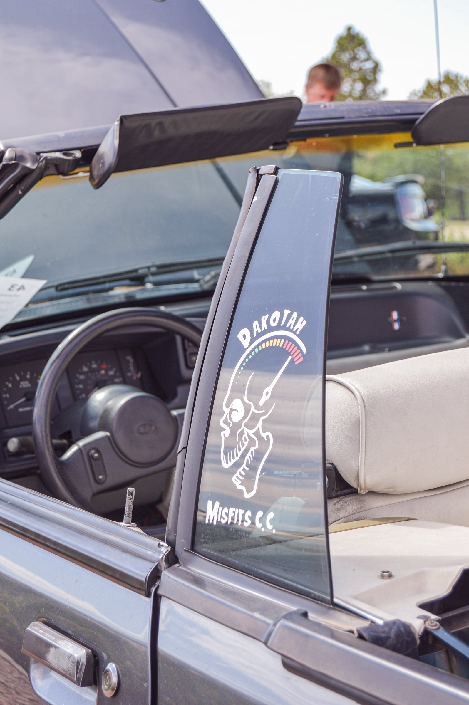
Local GroupsClean, dramatic portraits of your pride and joy—stock, modified, classic, or somewhere in between.
The energy, the people, the details. Capturing the scene from early morning cruises to night meets. Hit me up if you would like me to come out for a local meet!
Movement, atmosphere, and the Black Hills backdrop. Creative sessions built around your vision.
Whether you've spent years restoring a classic or just picked up your first ride, it deserves a photo worth keeping.
I'm the photographer behind PHOTY MOTORWORKS, originally from Northern California and currently serving on active duty in the United States Air Force, stationed here in the beautiful Black Hills of South Dakota. I've always had a passion for cars, photography, and the unique stories behind every build. From classic American muscle and vintage cruisers to modern performance cars and daily drivers, I believe every vehicle deserves its moment in the spotlight. What started as a passion for capturing cars has grown into a way to connect with fellow enthusiasts and turn their pride and joy into something unforgettable. Whether we're shooting against the stunning landscapes of the Black Hills or under the city lights of Rapid City, my goal is simple: capture the personality, passion, and hard work behind every ride, one shot at a time.
No gatekeeping. No need for a six-figure build. Just a shared love of cars and photography, from vintage cruisers to today's performance machines.
Follow @pho.ty_graphy ↗Got a car, a location, or an idea? Let’s make it happen. Serving Rapid City and the greater Black Hills area.